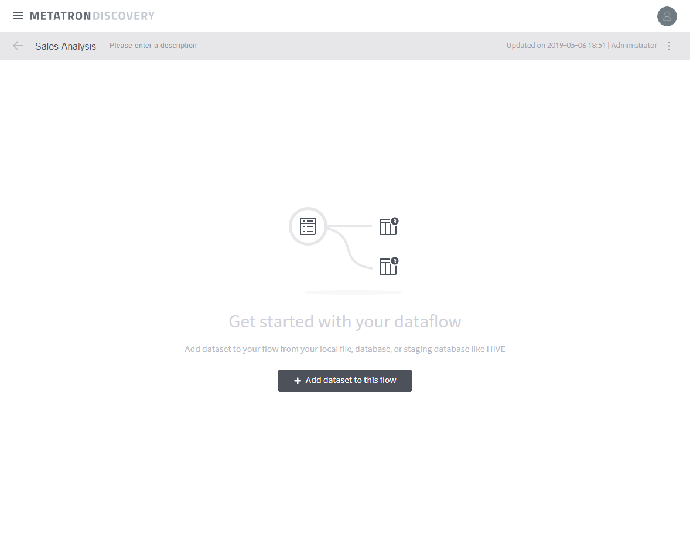
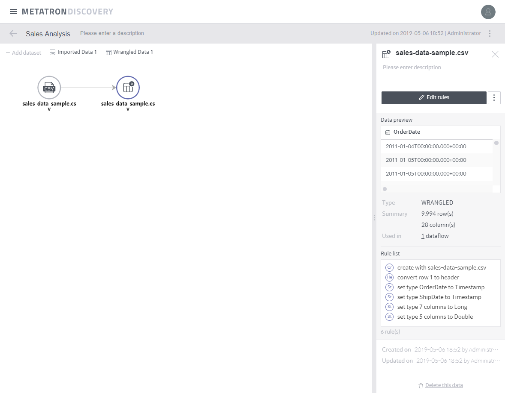

Add a dataset¶
The first step in defining a dataflow is to add a dataset. This can be conducted using the two methods described below:
Adding a dataset after creating an empty dataflow¶
Click Add a dataflow on the upper right of the Dataflow page.
Enter the Name and Description for the dataflow, and click Done to create an empty dataflow.

Click the Add dataset to this dataflow button on the center of the page.
Select the datasets to be added.

When an imported dataset and its corresponding wrangled dataset are created, click the Edit rules button to edit rules (see Edit rules for a detailed procedure).

Creating a dataflow in the dataset details page¶
In the dataset details page, click the Create dataflow with this dataset button to create a dataflow, and proceed until the step before Edit rules.

Note
The dataflow is named based on the name of the dataset.